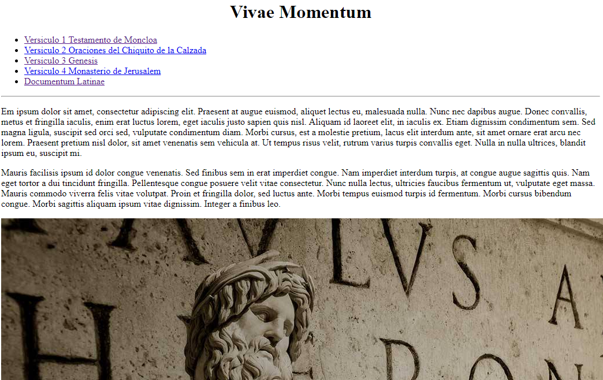
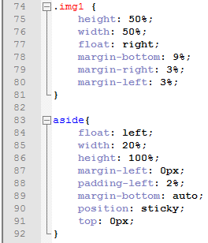

HTML
Que és HTML?
 HTML (Hyper Text Markup Lenguage), és un llenguatge basíc de programació per eleborar págines web compatible amb altres lleguatges que desarrolla una descripció sobre la estructura i text basat en hiperenllaços, a demés que pot contenir altres objectes com imatges, audio, video, etc...
Exemples de objectes amb HTML:
Historia
Origens
L'origen del llenguatge HTML es remunta al físic Tim Berners-Lee, que al final del 1989 va proposar el llenguatge HTML juntament amb el protocol HTTP, la finalitat era crear un mitjà per poder compartir informació entre diversos físics de l'època que treballaven arreu del món.
El primer document que es va publicar formalment sobre l'estructura de l'HTML es va publicar en l'any de 1991 amb el nom de: "HTML Tags", simplement és text en on s'expliquen les etiquetes que s'usen en HTML.
Versions del HTML
| Versió HTML | Any | Descipció |
|---|---|---|
| HTML 1 | 1986 | HTML més primitiu, no es obligatori utilitzar head i body, encara no es un estandar. |
| HTML 2 | 1995 | La primera versió del HTML oficial, no soporta taules. |
| HTML 3.2 | 1997 | Suporta applets i taules. Millora disposició de text i imatges. |
| HTML 4 | 1997 | Estandarditza marcs, fulls d’estils CSS i scripts. |
| HTML 4.1 | 1999 | El més usat actualment. Té tres dues modificacions: Strict (elimina etiquetes obsoletes), Transitional (sí les suporta) i Frameset (suporta frames). |
| HTML 5 | 2014 | No es necesita Frameset per penjar videos o imatges i els divs més utilitzats són ara ordres. |
Fonaments del llenguatge
Perque necesitam una estructura?
Avantatges del CSS
 CSS (Cascading Style Sheets), es un llenguatje de diseny gráfic que se encarrega de definir del diseny i la presentació de un llenguatje estructurat com HTML o derivats.
Les aventatges de utilitzar CSS, són moltes. Ens dona la capacitat de seperar el contingut més clarament (encara que el arxiu principal u fa) i una millora de presentació en un arxiu paral·lel del principal amb total precisió, ja que podem elegir inclús els pixels que volem de marge o de tamany de la imatge o la lletra, i així també no correm riscos de interferrencies entre els dos. També ens dona flexibilitat i una unificació del diseny, ja que podem modificar el document del CSS en qualsevol moment i utilitzar el mateix archiu per diversos arxius de estructuració diferents (encara que siguin diferents llenguatjes gracis que conté un standart).
Utilitzant el CSS feim una netetge del codi font convertit-lo a un document menys pesat, que dona menys temps de espera al que demana el arxiu.